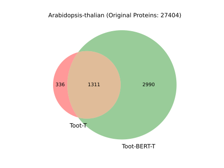
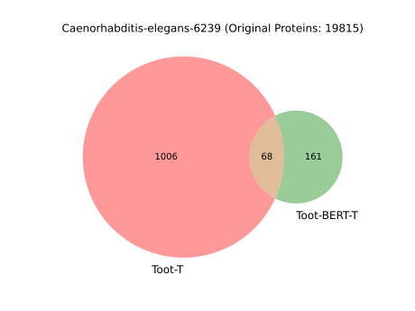
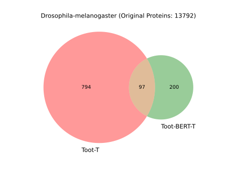
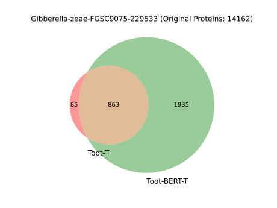
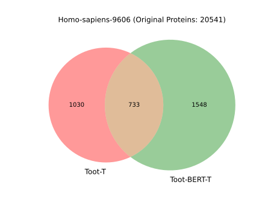
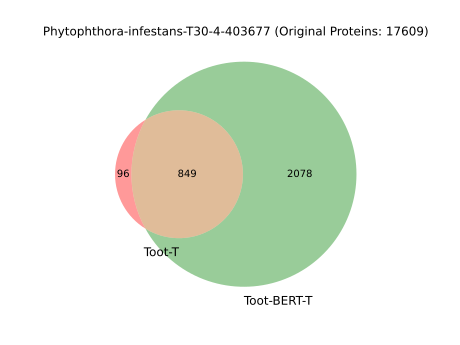

Our Datasets
A_niger_CBS513_88_proteins.fasta
Agaricus-bisporus_597362.fasta
Arabidopsis-thalian.fasta
Ashbya-gossypii-ATCC10895-cotton-pathogen.fasta
Bacillus-subtilis-168.fasta
Bos-taurus_9913.fasta
Botrytis-cinerea_1290391.fasta
Brassica-napus_3708.fasta
Brassica-rapa-pekinensis_51351.fasta
C_albicans_SC5314_proteins.fasta
Caenorhabditis-elegans_6239.fasta
Drosophila-melanogaster.fasta
Ecoli-K12-proteins.fasta
Gallus-gallus_9031.fasta
Gibberella-zeae-FGSC9075_229533.fasta
Homo-sapiens_9606.fasta
Magnaporthe-oryzae-FGSC8958_242507.fasta
Medicago-truncatula.fasta
Mus-musculus_10090.fasta
Oryza-sativa-japonica_39947.fasta
Penicillium-chrysogenum-ATCC28089_500485.fasta
Phytophthora-infestans-T30-4_403677.fasta
S_cerivisae_S288C_proteins.fasta
Sorghum-bicolor_4558.fasta
Sus-scrofa_9823.fasta
Triticum-aestivum_4565.fasta